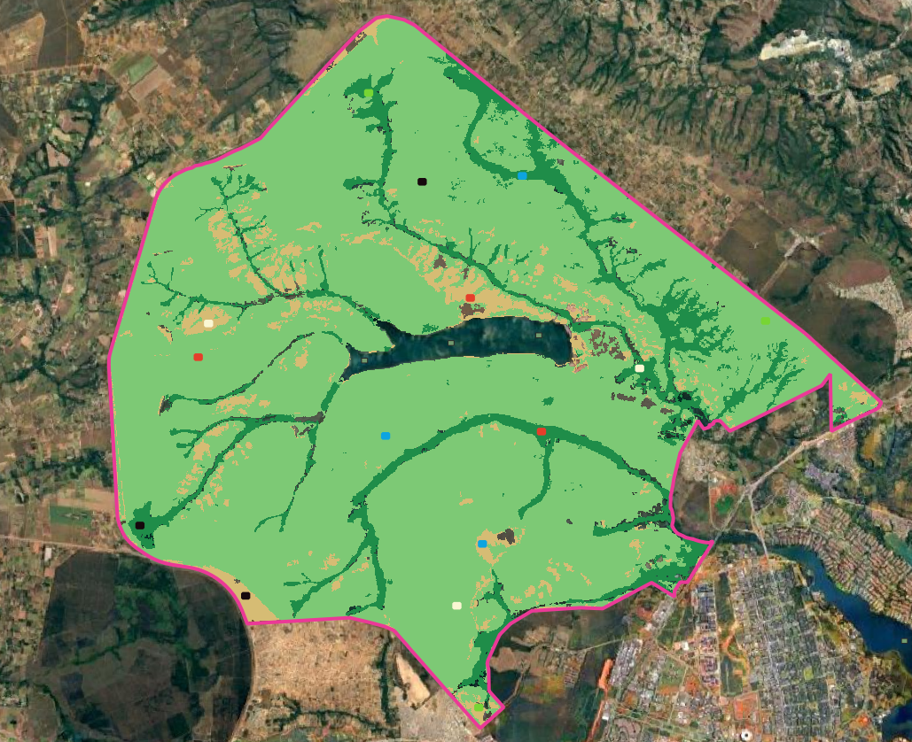

knitr::opts_chunk$set(message=FALSE, warning=FALSE, error=TRUE)
library(ggplot2)
library(ggthemes)
theme_set(theme_pander() +
theme(text=element_text(family="serif")))
library(readr)
library(reshape2)
library(twosamples)NISAR Data analysis
Introdução
Este estudo trata de uma análise de dados de intensidade do sinal do NISAR sobre a vegetação nativa do Cerrado. As três principais fitofisionomias do Cerrado são os alvos desta investigação: Formação Florestal, Formação Savânica e Formação Campestre. Cada fitofisionomia é tratada neste estudo como uma classe temática, e sua extensão é dada pelo mapa de uso e cobertura do solo (Land Use and Land Cover - LULC) de 2025 do MapBiomas, com resolução espacial de 10 m. A área estudada compreende o Parque Nacional de Brasília (PNB), Brasil.
Como fonte de dados SAR, utilizamos os dados do NISAR (banda L), com as polarizações HH e HV e resolução espacial de 10 m após o processamento de multilook com uma janela de 2x1. A partir desse dado, extraiu-se as componentes da matriz C2. A componente C11 correponde à intensidade do sinal na polarização HH, e a componente C22 corresponde à intensidade do sinal na polatização HV. A cena foi obtida através do portal Alaska Satellite Facility (ASF), com identificador NISAR_L2_PR_GSLC_023_146_A_170_4005_DHDH_A_20260624T090126_20260624T090159_P05023_N_F_J_001.h5
A ideia central deste estudo é verificar se amostras de uma mesma classe conhecida a priori são homogêneas no domínio espacial. Parte-se do princípio de que caso as amostras sejam homogêneas no espaço, toda a classe pode ser modelada por uma mesma função de distribuição cumulativa. Nesse sentido, o objetivo deste estudo é testar a hipótese de homogeneidade no domínio espacial das classes de vegetação nativa do Cerrado. Esta é uma iniciativa que visa a compreensão dos dados SAR sobre o Cerrado, de modo a contribuir com o aperfeiçoamento do monitoramento e combate ao desmatamento no Cerrado brasileiro.
Foram definidas 5 amostras espalhadas pelo domínio espacial das classes. Cada amostra recebeu um rótulo com uma cor: Branco (W), Azul (U), Preto (B), Vermelho (R) e Verde (G). Os polígonos amostrais possuem geometria retangular com 200 m x 150 m, totalizando 300 observações por amostra. Cada observação é um vetor contendo as intensidades das duas polarizações \(O_{i} = (I_{HH}, I_{HV})\).

Análise não-paramétrica
Precisamos verificar se as amostras foram geradas pela mesma distribuição.
Fo_W <- read_csv("Data/pnb_samples/nisar/n_200/Fo_W.csv")
Fo_U <- read_csv("Data/pnb_samples/nisar/n_200/Fo_U.csv")
Fo_B <- read_csv("Data/pnb_samples/nisar/n_200/Fo_B.csv")
Fo_R <- read_csv("Data/pnb_samples/nisar/n_200/Fo_R.csv")
Fo_G <- read_csv("Data/pnb_samples/nisar/n_200/Fo_G.csv")
Sv_W <- read_csv("Data/pnb_samples/nisar/n_200/Sv_W.csv")
Sv_U <- read_csv("Data/pnb_samples/nisar/n_200/Sv_U.csv")
Sv_B <- read_csv("Data/pnb_samples/nisar/n_200/Sv_B.csv")
Sv_R <- read_csv("Data/pnb_samples/nisar/n_200/Sv_R.csv")
Sv_G <- read_csv("Data/pnb_samples/nisar/n_200/Sv_G.csv")
Gl_W <- read_csv("Data/pnb_samples/nisar/n_200/Gl_W.csv")
Gl_U <- read_csv("Data/pnb_samples/nisar/n_200/Gl_U.csv")
Gl_B <- read_csv("Data/pnb_samples/nisar/n_200/Gl_B.csv")
Gl_R <- read_csv("Data/pnb_samples/nisar/n_200/Gl_R.csv")
Gl_G <- read_csv("Data/pnb_samples/nisar/n_200/Gl_G.csv")Resumo dos dados
Intensities <- data.frame(Fo_B[,-1],
Image=as.factor(rep("FoB", nrow(Fo_B))))
Intensities <- rbind(Intensities,
data.frame(Fo_R[,-1],
Image=as.factor(rep("FoR", nrow(Fo_R)))))
Intensities <- rbind(Intensities,
data.frame(Fo_W[,-1],
Image=as.factor(rep("FoW", nrow(Fo_W)))))
Intensities <- rbind(Intensities,
data.frame(Fo_U[,-1],
Image=as.factor(rep("FoU", nrow(Fo_U)))))
Intensities <- rbind(Intensities,
data.frame(Fo_G[,-1],
Image=as.factor(rep("FoG", nrow(Fo_G)))))
Intensities.molten <- reshape2::melt(Intensities, variable.name="Band", value.name="Intensity")
summary(Intensities.molten) Image Band Intensity
FoB:400 IHH:1000 Min. :0.01342
FoR:400 IHV:1000 1st Qu.:0.08463
FoW:400 Median :0.16397
FoU:400 Mean :0.22011
FoG:400 3rd Qu.:0.28821
Max. :2.53759 Tabela_Intervalo <- aggregate(data = Intensities.molten,
Intensity ~ Image + Band,
FUN=summary)Histogramas suavizados
ggplot(Intensities.molten, aes(x=Intensity, col=Image)) +
geom_density(linewidth=1.2, alpha=.5) +
geom_boxplot(notch=TRUE) +
ylab("Empirical densities") +
facet_grid(~Band, scales="free") # "soltamos" os eixos para promover comparação dentro de cada banda
QQ-plots
ggplot(Intensities.molten, aes(sample=Intensity, col=Image)) +
stat_qq_line() +
stat_qq() +
ylab("Sample quantiles") +
xlab("Theoretical quantiles") +
facet_grid(~Band, scales="free")
Testes de permutações para comparar as amostras
amostras <- list(W = Fo_W, U = Fo_U, B = Fo_B, R = Fo_R, G = Fo_G)
bandas <- c(HH = "IHH", HV = "IHV")
pares <- combn(names(amostras), 2, simplify = FALSE)
resultados_permutacao <- do.call(rbind, lapply(names(bandas), function(banda) {
variavel <- bandas[[banda]]
do.call(rbind, lapply(pares, function(par) {
teste <- dts_test(amostras[[par[1]]][[variavel]],
amostras[[par[2]]][[variavel]])
data.frame(
Banda = banda,
Comparacao = paste(par, collapse = " vs. "),
p_valor = unname(teste[["P-Value"]])
)
}))
}))
tabela_permutacao <- function(resultados) {
resultados <- resultados[order(resultados$Banda, resultados$Comparacao), ]
knitr::kable(
data.frame(
Banda = resultados$Banda,
Comparacao = resultados$Comparacao,
p_valor = format.pval(resultados$p_valor, digits = 3, eps = 0.001)
),
col.names = c("Banda", "Comparação entre amostras", "p-valor")
)
}Considera-se significância de 1%: não se rejeita a hipótese nula quando \(p \geq 0{,}01\) e rejeita-se quando \(p < 0{,}01\).
Casos em que não se rejeita a hipótese nula
tabela_permutacao(subset(resultados_permutacao, p_valor >= 0.01))| Banda | Comparação entre amostras | p-valor |
|---|---|---|
| HH | B vs. G | 0.1670 |
| HH | B vs. R | 0.0120 |
| HH | U vs. B | 0.0250 |
| HH | U vs. R | 0.9990 |
| HH | W vs. B | 0.0545 |
| HH | W vs. G | 0.0135 |
| HH | W vs. R | 0.7805 |
| HH | W vs. U | 0.8240 |
| HV | B vs. G | 0.4225 |
| HV | B vs. R | 0.7765 |
| HV | R vs. G | 0.7640 |
| HV | U vs. B | 0.2720 |
| HV | U vs. R | 0.0510 |
| HV | W vs. B | 0.0190 |
| HV | W vs. U | 0.2785 |
Casos em que se rejeita a hipótese nula
tabela_permutacao(subset(resultados_permutacao, p_valor < 0.01))| Banda | Comparação entre amostras | p-valor |
|---|---|---|
| HH | R vs. G | 0.0065 |
| HH | U vs. G | 0.0050 |
| HV | U vs. G | 0.0055 |
| HV | W vs. G | <0.001 |
| HV | W vs. R | 0.0040 |
Análise paramétrica
Partimos agora para o ajuste de modelos, a fim de encontrar a melhor representação paramétrica da intensidade SAR nas diferentes bandas e amostras. O número equivalente de looks (ENL) é \(3.3795\) para C11 e \(3.4487\) para C22. Esses valores foram obtidos a partir de amostras extraídas sobre corpos d’água e solo exposto na cena completa. Em teoria, esta é uma estimativa global para a cena.
Para cada classe de cobertura, comparamos três parametrizações: 1. Os parâmetros estimados por MASS::fitdistr; 2. ENL da amostra e média da amosta; 3. ENL da cena completa e média da amostra.
Modelo Gama para Intensidade (\(\Gamma_{SAR}\))
Sob o modelo multiplicativo e em áreas com speckle totalmente desenvolvido, o retorno de intensidade segue uma distribuição gama de parâmetro de forma \(L\), o número equivalente de looks, e média \(\mu>\). Essa distribuição é caracterizada pela função de densidade de probabilidade
\[\begin{equation} f_Z(z;L,\mu) = \frac{L^L}{\Gamma(L)\mu^L} z^{L-1}\exp\Big(-\frac{Lz}{\mu}\Big) \mathbb I_{\mathbb R_+}(z). \label{eq:dgamaLmu} \end{equation}\]
Amostras de Floresta (Fo)
| Imagem | Banda | shape (fitdistr) | ENL da amostra (1/CV^2) |
|---|---|---|---|
| FoB | IHH | 2.9193 | 2.7259 |
| FoR | IHH | 2.6830 | 2.5247 |
| FoW | IHH | 2.7829 | 2.8602 |
| FoU | IHH | 2.6902 | 2.4938 |
| FoG | IHH | 2.1077 | 1.3303 |
| FoB | IHV | 2.2457 | 2.0483 |
| FoR | IHV | 2.1850 | 1.7735 |
| FoW | IHV | 3.0853 | 2.9310 |
| FoU | IHV | 2.5060 | 2.1334 |
| FoG | IHV | 2.4074 | 2.0329 |


Amostras de Savana (Sv)
| Imagem | Banda | shape (fitdistr) | ENL da amostra (1/CV^2) |
|---|---|---|---|
| SvB | IHH | 2.9640 | 2.8705 |
| SvR | IHH | 2.9421 | 3.0806 |
| SvW | IHH | 3.2773 | 2.7541 |
| SvU | IHH | 3.3285 | 3.0243 |
| SvG | IHH | 3.2473 | 3.1842 |
| SvB | IHV | 3.1496 | 3.0776 |
| SvR | IHV | 3.3277 | 2.8342 |
| SvW | IHV | 3.2469 | 3.1445 |
| SvU | IHV | 3.3136 | 3.1094 |
| SvG | IHV | 3.1821 | 2.8967 |


Amostras de Campestre (Gl)
| Imagem | Banda | shape (fitdistr) | ENL da amostra (1/CV^2) |
|---|---|---|---|
| GlB | IHH | 2.6680 | 2.1175 |
| GlR | IHH | 3.3937 | 3.1871 |
| GlW | IHH | 3.7438 | 3.4319 |
| GlU | IHH | 2.9817 | 2.6591 |
| GlG | IHH | 2.3004 | 1.3909 |
| GlB | IHV | 2.7099 | 2.2549 |
| GlR | IHV | 3.0393 | 2.8671 |
| GlW | IHV | 3.5873 | 3.2269 |
| GlU | IHV | 3.7734 | 3.5473 |
| GlG | IHV | 2.5152 | 1.4147 |


Os valores de shape e os ENL da amostra estimados por \(1/CV^2\) podem ser comparados em cada tabela, e os três gráficos por amostra permitem avaliar o efeito de fixar o ENL da amostra ou o ENL da cena completa nas classes de floresta, savana e campestre.
Para todos os casos, todas as parametrizações apresentaram certa convergência, o que é esperado para o caso de de dados que seguem a distribuição gama. No entanto, fica o meu questionamento (Jales): essa suposta similaridade entre as curvas é suficiente para utilizarmos um teste de hipótese paramétricos para esses dados?
ACF: Não é suficiente. Vamos testar a qualidade do ajuste para a lei gama. Como estamos estimando os parâmetros, não devemos usar o teste de Kolmogorov-Smirnov. Podemos usar bootstrap paramétrico.
Teste de aderência à distribuição (\(\Gamma_{SAR}\)) (goodness-of-fit)
# Teste de aderência à gama via bootstrap paramétrico sobre a estatística de
# Kolmogorov-Smirnov. Como os parâmetros são estimados a partir da própria
# amostra, a distribuição nula de D não é a tabelada para KS; por isso os
# quantis são obtidos por simulação (bootstrap paramétrico), re-estimando os
# parâmetros por máxima verossimilhança em cada réplica (não por momentos).
teste_aderencia_gama <- function(x, B = 1000) {
n <- length(x)
estimativas <- MASS::fitdistr(x, densfun="gamma")$estimate
L_hat <- unname(estimativas[1])
mu_hat <- unname(estimativas[2])
D_obs <- max(abs(
ecdf(x)(sort(x)) -
pgamma(sort(x), shape = L_hat, scale = mu_hat / L_hat)
))
D_sim <- numeric(B)
for (b in seq_len(B)) {
xb <- rgamma(n, shape = L_hat, scale = mu_hat / L_hat)
estimativas_b <- MASS::fitdistr(xb, densfun="gamma")$estimate
L_b <- unname(estimativas_b[1])
mu_b <- unname(estimativas_b[2])
D_sim[b] <- max(abs(
ecdf(xb)(sort(xb)) -
pgamma(sort(xb), shape = L_b, scale = mu_b / L_b)
))
}
(1 + sum(D_sim >= D_obs)) / (B + 1)
}Aplicamos o teste a todas as amostras das três classes (Fo, Sv, Gl) e às duas polarizações (IHH e IHV).
amostras_gof <- list(
FoB=Fo_B, FoR=Fo_R, FoW=Fo_W, FoU=Fo_U, FoG=Fo_G,
SvB=Sv_B, SvR=Sv_R, SvW=Sv_W, SvU=Sv_U, SvG=Sv_G,
GlB=Gl_B, GlR=Gl_R, GlW=Gl_W, GlU=Gl_U, GlG=Gl_G
)
classes_gof <- c(Fo="Floresta", Sv="Savana", Gl="Campestre")
bandas_gof <- c(HH="IHH", HV="IHV")
set.seed(2024)
resultados_aderencia <- do.call(rbind, lapply(names(amostras_gof), function(imagem) {
classe <- classes_gof[[substr(imagem, 1, 2)]]
do.call(rbind, lapply(names(bandas_gof), function(banda) {
variavel <- bandas_gof[[banda]]
x <- amostras_gof[[imagem]][[variavel]]
data.frame(
Classe = classe,
Imagem = imagem,
Banda = banda,
p_valor = teste_aderencia_gama(x)
)
}))
}))
tabela_aderencia <- function(resultados) {
resultados <- resultados[order(resultados$Classe, resultados$Imagem, resultados$Banda), ]
knitr::kable(
data.frame(
Classe = resultados$Classe,
Imagem = resultados$Imagem,
Banda = resultados$Banda,
p_valor = format.pval(resultados$p_valor, digits = 3, eps = 0.001)
),
col.names = c("Classe", "Imagem", "Banda", "p-valor")
)
}Considera-se significância de 1%: não se rejeita a hipótese nula de ajuste à gama quando \(p \geq 0{,}01\) e rejeita-se quando \(p < 0{,}01\).
Casos em que não se rejeita o ajuste à gama
tabela_aderencia(subset(resultados_aderencia, p_valor >= 0.01))| Classe | Imagem | Banda | p-valor |
|---|---|---|---|
| Floresta | FoB | HH | 0.333 |
| Floresta | FoG | HH | 0.393 |
| Floresta | FoR | HH | 0.153 |
| Floresta | FoU | HH | 0.200 |
| Floresta | FoW | HH | 0.205 |
Casos em que se rejeita o ajuste à gama
tabela_aderencia(subset(resultados_aderencia, p_valor < 0.01))| Classe | Imagem | Banda | p-valor |
|---|---|---|---|
| Campestre | GlB | HH | <0.001 |
| Campestre | GlB | HV | <0.001 |
| Campestre | GlG | HH | <0.001 |
| Campestre | GlG | HV | <0.001 |
| Campestre | GlR | HH | <0.001 |
| Campestre | GlR | HV | <0.001 |
| Campestre | GlU | HH | <0.001 |
| Campestre | GlU | HV | <0.001 |
| Campestre | GlW | HH | <0.001 |
| Campestre | GlW | HV | <0.001 |
| Floresta | FoB | HV | <0.001 |
| Floresta | FoG | HV | <0.001 |
| Floresta | FoR | HV | <0.001 |
| Floresta | FoU | HV | <0.001 |
| Floresta | FoW | HV | <0.001 |
| Savana | SvB | HH | <0.001 |
| Savana | SvB | HV | <0.001 |
| Savana | SvG | HH | <0.001 |
| Savana | SvG | HV | <0.001 |
| Savana | SvR | HH | <0.001 |
| Savana | SvR | HV | <0.001 |
| Savana | SvU | HH | <0.001 |
| Savana | SvU | HV | <0.001 |
| Savana | SvW | HH | <0.001 |
| Savana | SvW | HV | <0.001 |
Interessante: para as amostras da classe Floresta na polarização HH não se rejeita o ajuste à gama. Este é o único caso onde todas as amostras de uma classe é modelada pela gama. Para todo o restante, a gama não é o modelo adequado para caracterizar as amostras.
Segundo Alpala et al. (2026), a distribuição gama SAR caracteriza o ruído speckle completamente desenvolvido em regiões homogêneas em imagens SAR. Como a classe Floresta na polarização HH não rejeita o ajuste à gama, isso é um indicativo de que estas amostras possam ser consideradas homogêneas no domínio espacial. Em termos práticos, para reforçar essa ideia de homogeneidade, um teste paramétrico pode ser aplicado para verificar a proximidade das amostras entre si. Um bom exemplo é o teste baseado em distâncias estocásticas, como o teste de Kullback-Leibler (Nascimento et al. 2010).
Distribuição \(\mathcal G^0_I\) para Intensidade
Segundo Alpala et al. (2026), a distribuição \(\mathcal G^0_I\) é reconhecida por sua capacidade de capturar diferentes níveis de heterogeneidade em imagens SAR. Sob o modelo multiplicativo com retroespalhamento \(X\sim\Gamma^{-1}(\alpha,\gamma)\) e speckle \(Y\sim\Gamma(L,L)\) independentes, \(Z=XY\sim\mathcal G^0_I(\alpha,\gamma,L)\) com densidade \[ f_Z(z;\alpha,\gamma,L)=\frac{L^L\Gamma(L-\alpha)}{\gamma^\alpha\Gamma(L)\Gamma(-\alpha)} \frac{z^{L-1}}{(\gamma+Lz)^{L-\alpha}}. \]
O número de looks é tomado como conhecido (\(\widehat L\) = ENL da cena completa, LHH ou LHV) e \((\alpha,\gamma)\) são estimados por máxima verossimilhança, maximizando a log-verossimilhança reduzida \[
\ell(\alpha,\gamma;\widehat L,\boldsymbol Z)=n\log\frac{\Gamma(\widehat L-\alpha)}{\gamma^\alpha\Gamma(-\alpha)}
+\widehat L\sum_{i=1}^n\log\frac{Z_i}{\gamma+\widehat LZ_i}+\alpha\sum_{i=1}^n\log(\gamma+\widehat LZ_i),
\]
Os estimadores \(\widehat\alpha\) e \(\widehat\gamma\) são a solução do sistema de equações de score, \(\partial\ell/\partial\alpha=0\) e \(\partial\ell/\partial\gamma=0\): \[
\begin{cases}
\psi^0(\widehat L-\widehat\alpha)-\psi^0(-\widehat\alpha)+\log\widehat\gamma-\dfrac1n\displaystyle\sum_{i=1}^n\log(\widehat\gamma+\widehat LZ_i)=0,\\[2ex]
-\dfrac{\widehat\alpha}{\widehat\gamma}+\dfrac{\widehat\alpha-\widehat L}{n}\displaystyle\sum_{i=1}^n(\widehat\gamma+\widehat LZ_i)^{-1}=0,
\end{cases}
\] em que \(\psi^0(\cdot)\) é a função digama. Esse sistema não possui solução em forma fechada, e por isso a estimação é feita por maximização numérica da log-verossimilhança (optim, método quasi-Newton L-BFGS-B).
Como o método é iterativo, precisa de um ponto inicial, que obtemos pelo método dos momentos. O momento de ordem \(r\) de \(Z\) é \[ \mathbb E[Z^r]=\Big(\frac{\gamma}{L}\Big)^r\frac{\Gamma(-\alpha-r)}{\Gamma(-\alpha)}\frac{\Gamma(L+r)}{\Gamma(L)}, \qquad -\alpha>r, \] e infinito caso contrário. Para \(r=1,2\): \[ \mathbb E[Z]=\frac{\gamma}{-\alpha-1}, \qquad \frac{\mathbb E[Z^2]}{\mathbb E[Z]^2}=\frac{L+1}{L}\,\frac{-\alpha-1}{-\alpha-2}. \] Substituindo os momentos amostrais, a segunda equação fornece \(\alpha\) e a primeira, \(\gamma\). A segunda só tem solução com \(-\alpha>2\).
Para cada amostra, comparamos o histograma e a densidade empírica com a \(\mathcal G^0_I\) ajustada por máxima verossimilhança (com \(L\) da cena completa) e, como referência, com a gama ajustada por fitdistr.
Amostras de Floresta (Fo)


Amostras de Savana (Sv)


Amostras de Campestre (Gl)


Teste de aderência à distribuição \(\mathcal G^0_I\) (goodness-of-fit)
O teste de aderência utiliza a estatística de Kolmogorov-Smirnov, \(D=\max_z|\hat F_n(z)-F(z)|\), e por isso é necessária a função de distribuição acumulada \(F\) da \(\mathcal G^0_I\), para compará-la com a CDF empírica \(\hat F_n\). Além disso, como os parâmetros são estimados a partir da própria amostra, a distribuição nula de \(D\) não é a tabelada, e a obtemos por bootstrap paramétrico, o que exige simular amostras da \(\mathcal G^0_I\) ajustada. Ambos os ingredientes (CDF e gerador de amostras) são obtidos a seguir diretamente do modelo multiplicativo \(Z=XY\).
Derivação a partir do modelo multiplicativo.
Representação por gamas padrão. Dizer que \(Y\sim\Gamma(L,L)\) (média 1) equivale a \(Y=H/L\), com \(H\sim\Gamma(L,1)\). Dizer que \(X\sim\Gamma^{-1}(\alpha,\gamma)\) equivale a \(X=\gamma/G\), com \(G\sim\Gamma(-\alpha,1)\) (lembre que \(\alpha<0\), logo \(-\alpha>0\) é o parâmetro de forma). Como \(X\) e \(Y\) são independentes, \(G\) e \(H\) também são.
O produto. \[ Z=XY=\frac{\gamma}{G}\cdot\frac{H}{L}=\frac{\gamma}{L}\,\frac{H}{G} \quad\Longrightarrow\quad \frac{LZ}{\gamma}=\frac{H}{G}. \]
Levando a razão para \((0,1)\). Dividindo numerador e denominador por \(G\), \[ \frac{LZ}{\gamma+LZ} =\frac{LZ/\gamma}{1+LZ/\gamma} =\frac{H/G}{1+H/G} =\frac{H}{H+G}. \]
Resultado clássico. Se \(H\sim\Gamma(a,1)\) e \(G\sim\Gamma(b,1)\) são independentes, então \(H/(H+G)\sim\text{Beta}(a,b)\). Com \(a=L\) e \(b=-\alpha\): \[ V=\frac{LZ}{\gamma+LZ}\sim\text{Beta}(L,-\alpha). \]
Consequências:
- CDF: \(F_Z(z)=P\big(V\le Lz/(\gamma+Lz)\big)=F_{\text{Beta}(L,-\alpha)}\big(Lz/(\gamma+Lz)\big)\), pois \(v\mapsto \gamma v/(L(1-v))\) é crescente.
- Gerador: sorteia-se \(V\sim\text{Beta}(L,-\alpha)\) e toma-se \(Z=\gamma V/\big(L(1-V)\big)\), que é a inversão do passo 3.
O procedimento (bootstrap paramétrico sobre a estatística de Kolmogorov-Smirnov, com reestimação por máxima verossimilhança em cada réplica) é o mesmo utilizado para a gama.
pG0 <- function(z, alpha, gamma, L) {
pbeta(L * z / (gamma + L * z), shape1 = L, shape2 = -alpha)
}
rG0 <- function(n, alpha, gamma, L) {
v <- rbeta(n, shape1 = L, shape2 = -alpha)
gamma * v / ((1 - v) * L)
}
estat_KS_G0 <- function(x, alpha, gamma, L) {
xs <- sort(x)
max(abs(ecdf(x)(xs) - pG0(xs, alpha, gamma, L)))
}
teste_aderencia_G0 <- function(x, L, B = 1000) {
n <- length(x)
est <- ajustar_G0_mv(x, L)
D_obs <- estat_KS_G0(x, est[["alpha"]], est[["gamma"]], L)
D_sim <- rep(NA_real_, B)
for (b in seq_len(B)) {
xb <- rG0(n, est[["alpha"]], est[["gamma"]], L)
est_b <- tryCatch(ajustar_G0_mv(xb, L, inicio = est), error = function(e) NULL)
if (!is.null(est_b)) {
D_sim[b] <- estat_KS_G0(xb, est_b[["alpha"]], est_b[["gamma"]], L)
}
}
D_sim <- D_sim[is.finite(D_sim)]
list(
alpha = est[["alpha"]],
gamma = est[["gamma"]],
p_valor = (1 + sum(D_sim >= D_obs)) / (length(D_sim) + 1)
)
}set.seed(2024)
resultados_aderencia_G0 <- do.call(rbind, lapply(names(amostras_gof), function(imagem) {
classe <- classes_gof[[substr(imagem, 1, 2)]]
do.call(rbind, lapply(names(bandas_gof), function(banda) {
x <- amostras_gof[[imagem]][[bandas_gof[[banda]]]]
res <- teste_aderencia_G0(x, L_banda[[banda]])
data.frame(
Classe = classe,
Imagem = imagem,
Banda = banda,
alpha = res$alpha,
gamma = res$gamma,
p_valor = res$p_valor
)
}))
}))
tabela_aderencia_G0 <- function(resultados) {
resultados <- resultados[order(resultados$Classe, resultados$Imagem, resultados$Banda), ]
knitr::kable(
data.frame(
Classe = resultados$Classe,
Imagem = resultados$Imagem,
Banda = resultados$Banda,
alpha = round(resultados$alpha, 3),
gamma = signif(resultados$gamma, 4),
p_valor = format.pval(resultados$p_valor, digits = 3, eps = 0.001)
),
col.names = c("Classe", "Imagem", "Banda", "$\\hat\\alpha$", "$\\hat\\gamma$", "p-valor"),
escape = FALSE
)
}Com significância de 1%, não se rejeita o ajuste à \(\mathcal G^0_I\) quando \(p \geq 0{,}01\).
Casos em que não se rejeita o ajuste à G0
tabela_aderencia_G0(subset(resultados_aderencia_G0, p_valor >= 0.01))| Classe | Imagem | Banda | \(\hat\alpha\) | \(\hat\gamma\) | p-valor |
|---|---|---|---|---|---|
| Campestre | GlB | HH | -12.631 | 0.61290 | 0.1698 |
| Campestre | GlB | HV | -10.232 | 0.08933 | 0.0509 |
| Campestre | GlG | HH | -6.940 | 0.34360 | 0.3826 |
| Campestre | GlG | HV | -8.265 | 0.08538 | 0.1858 |
| Campestre | GlR | HH | -99.104 | 3.37800 | 0.0869 |
| Campestre | GlR | HV | -24.600 | 0.20550 | 0.2138 |
| Campestre | GlU | HV | -500.000 | 3.82800 | 0.5664 |
| Campestre | GlW | HH | -500.000 | 21.80000 | 0.0799 |
| Campestre | GlW | HV | -72.212 | 0.62380 | 0.1309 |
| Floresta | FoB | HH | -25.141 | 8.67800 | 0.2607 |
| Floresta | FoB | HV | -6.638 | 0.66230 | 0.6014 |
| Floresta | FoG | HH | -5.615 | 1.65900 | 0.1009 |
| Floresta | FoG | HV | -7.816 | 0.87970 | 0.3906 |
| Floresta | FoR | HH | -13.051 | 3.58400 | 0.5844 |
| Floresta | FoR | HV | -5.699 | 0.56780 | 0.0360 |
| Floresta | FoU | HH | -12.796 | 3.51700 | 0.9451 |
| Floresta | FoU | HV | -8.184 | 0.75500 | 0.1019 |
| Floresta | FoW | HH | -22.399 | 6.63800 | 0.7483 |
| Floresta | FoW | HV | -26.151 | 2.59700 | 0.3896 |
| Savana | SvB | HH | -26.852 | 6.32600 | 0.5085 |
| Savana | SvB | HV | -36.165 | 2.46800 | 0.3417 |
| Savana | SvG | HH | -80.174 | 18.66000 | 0.6753 |
| Savana | SvG | HV | -27.982 | 1.86500 | 0.9950 |
| Savana | SvR | HH | -39.741 | 11.79000 | 0.2278 |
| Savana | SvR | HV | -29.074 | 2.07800 | 0.3796 |
| Savana | SvU | HV | -42.466 | 3.77000 | 0.0529 |
| Savana | SvW | HH | -29.861 | 6.76500 | 0.3367 |
| Savana | SvW | HV | -46.419 | 2.39400 | 0.1718 |
Casos em que se rejeita o ajuste à G0
tabela_aderencia_G0(subset(resultados_aderencia_G0, p_valor < 0.01))| Classe | Imagem | Banda | \(\hat\alpha\) | \(\hat\gamma\) | p-valor |
|---|---|---|---|---|---|
| Campestre | GlU | HH | -18.905 | 0.6774 | 0.005 |
| Savana | SvU | HH | -45.123 | 15.1200 | 0.003 |
Das 30 amostras testadas, 2 rejeitaram e 28 não rejeitaram o ajuste à \(\mathcal G^0_I\). Isso pode ser um indicativo que de, de fato, o modelo \(\mathcal G^0_I\) é adequado para modelar as distribuições amostrais do NISAR, para o caso específico dos alvos do Cerrado. Além disso, também é um indicativo de que as amostras tem um certo nível de heterogeneidade no domínio espacial. Nesse sentido, podemos utilizar o teste sobre distâncias estocásticas (Kullback-Leibler por exemplo) para fazer a verificação da similaridade/separabilidade entre as amostras de mesma classe.
Teste de homogeneidade entre amostras G0 via distância KL
Para comparar duas amostras independentes, sejam \(f_1\) e \(f_2\) suas densidades \(\mathcal G^0_I\), com o mesmo número de looks conhecido \(L\) e parâmetros \((\alpha_i,\gamma_i)\), \(i=1,2\). A distância KL simetrizada usada por Nascimento et al. (2010) é \[ d_{\mathrm{KL}}(f_1,f_2) =\frac{1}{2}\left\{D_{\mathrm{KL}}(f_1\Vert f_2)+D_{\mathrm{KL}}(f_2\Vert f_1)\right\} =\frac{1}{2}\int_0^\infty (f_1(z)-f_2(z))\log\frac{f_1(z)}{f_2(z)}\,\mathrm dz. \] Escrevendo \[ k_i=\frac{L^L\Gamma(L-\alpha_i)} {\gamma_i^{\alpha_i}\Gamma(L)\Gamma(-\alpha_i)}, \qquad f_i(z)=k_i\frac{z^{L-1}}{(\gamma_i+Lz)^{L-\alpha_i}}, \] o logaritmo da razão de densidades fica \[ \log\frac{f_1(z)}{f_2(z)} =\log\frac{k_1}{k_2} -(L-\alpha_1)\log(\gamma_1+Lz) +(L-\alpha_2)\log(\gamma_2+Lz), \] pois o termo \((L-1)\log z\) se cancela. Esta forma integral é a expressão final conveniente para o caso deste estudo, em que \(L\) é fixo e igual para as duas amostras; ela corresponde à expansão da distância apresentada no anexo, mas não requer avaliar separadamente cada uma das integrais dessa expansão.
Na metodologia de Nascimento et al. (2010), \(d_{\mathrm{KL}}\) corresponde à distância \((h,\phi)\) com \(h(y)=y/2\) e \(\phi(u)=(u-1)\log u\), de modo que \(h'(0)\phi''(1)=1\). Para tamanhos amostrais \(n_1\) e \(n_2\), a estatística \[ S_{\mathrm{KL}}=\frac{2n_1n_2}{n_1+n_2}d_{\mathrm{KL}}(\widehat f_1,\widehat f_2) \ \xrightarrow[H_0]{}\ \chi^2_2, \qquad H_0:(\alpha_1,\gamma_1)=(\alpha_2,\gamma_2), \] tem dois graus de liberdade porque \(L\) é conhecido e os dois parâmetros livres são \(\alpha\) e \(\gamma\). O p-valor é \(P(\chi^2_2\geq S_{\mathrm{KL}})\). Como em outras aproximações assintóticas, a calibração pressupõe observações independentes; a dependência espacial entre pixels pode afetar os p-valores. As comparações abaixo usam nível nominal de 1% sem ajuste para multiplicidade.
distancia_KL_G0 <- function(alpha1, gamma1, alpha2, gamma2, L) {
parametros <- c(alpha1, gamma1, alpha2, gamma2, L)
if (any(!is.finite(parametros)) ||
alpha1 >= 0 || alpha2 >= 0 ||
gamma1 <= 0 || gamma2 <= 0 || L <= 0) {
stop("Os parâmetros G0 devem ser finitos, alpha < 0, gamma > 0 e L > 0.")
}
if (alpha1 == alpha2 && gamma1 == gamma2) return(0)
log_densidade <- function(t, alpha, gamma) {
log_gamma <- log(gamma)
log_Lz <- log(L) + t
log_denominador <- pmax(log_gamma, log_Lz) +
log1p(exp(-abs(log_gamma - log_Lz)))
L * log(L) + lgamma(L - alpha) - alpha * log_gamma -
lgamma(L) - lgamma(-alpha) +
(L - 1) * t - (L - alpha) * log_denominador
}
integrando <- function(t) {
log_f1 <- log_densidade(t, alpha1, gamma1)
log_f2 <- log_densidade(t, alpha2, gamma2)
log_q1 <- log_f1 + t
log_q2 <- log_f2 + t
diferenca_log <- log_f1 - log_f2
ifelse(
log_q1 >= log_q2,
exp(log_q1) * (-expm1(log_q2 - log_q1)) * diferenca_log,
exp(log_q2) * (-expm1(log_q1 - log_q2)) * (-diferenca_log)
) / 2
}
integrate(integrando, lower = -Inf, upper = Inf,
rel.tol = 1e-8, subdivisions = 1000L)$value
}
teste_KL_G0 <- function(x1, x2, L) {
if (length(x1) < 2 || length(x2) < 2 ||
any(!is.finite(x1)) || any(!is.finite(x2)) ||
any(x1 <= 0) || any(x2 <= 0)) {
stop("Cada amostra deve conter ao menos duas intensidades finitas e positivas.")
}
est1 <- ajustar_G0_mv(x1, L)
est2 <- ajustar_G0_mv(x2, L)
distancia <- distancia_KL_G0(est1[["alpha"]], est1[["gamma"]],
est2[["alpha"]], est2[["gamma"]], L)
n1 <- length(x1)
n2 <- length(x2)
estatistica <- 2 * n1 * n2 / (n1 + n2) * distancia
list(
alpha1 = est1[["alpha"]],
gamma1 = est1[["gamma"]],
alpha2 = est2[["alpha"]],
gamma2 = est2[["gamma"]],
distancia = distancia,
estatistica = estatistica,
p_valor = pchisq(estatistica, df = 2, lower.tail = FALSE)
)
}
distancia_igual <- distancia_KL_G0(-3, 2, -3, 2, L = 3)
distancia_diferente <- distancia_KL_G0(-3, 2, -5, 4, L = 3)
distancia_reversa <- distancia_KL_G0(-5, 4, -3, 2, L = 3)
stopifnot(
distancia_igual == 0,
distancia_diferente > 0,
isTRUE(all.equal(distancia_diferente, distancia_reversa, tolerance = 1e-7))
)O teste é aplicado a todos os pares de amostras de cada classe, separadamente por banda.
resultados_KL_G0 <- do.call(rbind, lapply(names(classes_gof), function(prefixo) {
imagens <- grep(paste0("^", prefixo), names(amostras_gof), value = TRUE)
pares_classe <- combn(imagens, 2, simplify = FALSE)
do.call(rbind, lapply(names(bandas_gof), function(banda) {
do.call(rbind, lapply(pares_classe, function(par) {
resultado <- teste_KL_G0(
amostras_gof[[par[1]]][[bandas_gof[[banda]]]],
amostras_gof[[par[2]]][[bandas_gof[[banda]]]],
L_banda[[banda]]
)
data.frame(
Classe = classes_gof[[prefixo]],
Banda = banda,
Amostra1 = par[1],
Amostra2 = par[2],
distancia_KL = resultado$distancia,
Estatistica = resultado$estatistica,
p_valor = resultado$p_valor
)
}))
}))
}))
tabela_KL_G0 <- function(resultados) {
resultados <- resultados[
order(resultados$Classe, resultados$Banda,
resultados$Amostra1, resultados$Amostra2), ]
knitr::kable(
data.frame(
Classe = resultados$Classe,
Banda = resultados$Banda,
Amostra1 = resultados$Amostra1,
Amostra2 = resultados$Amostra2,
distancia_KL = signif(resultados$distancia_KL, 4),
Estatistica = signif(resultados$Estatistica, 4),
p_valor = format.pval(resultados$p_valor, digits = 3, eps = 0.001)
),
col.names = c("Classe", "Banda", "Amostra 1", "Amostra 2",
"$d_{KL}$", "$S_{KL}$", "p-valor"),
escape = FALSE
)
}Com nível nominal de 1%, não se rejeita \(H_0\) para comparações com \(p\geq0{,}01\); valores menores que 0,01 fornecem evidência de que as duas amostras não seguem a mesma distribuição \(\mathcal G^0_I\).
Casos em que não se rejeita \(H_0\)
tabela_KL_G0(subset(resultados_KL_G0, p_valor >= 0.01))| Classe | Banda | Amostra 1 | Amostra 2 | \(d_{KL}\) | \(S_{KL}\) | p-valor |
|---|---|---|---|---|---|---|
| Campestre | HH | GlB | GlG | 0.0137600 | 2.751000 | 0.2527 |
| Campestre | HH | GlR | GlU | 0.0176700 | 3.533000 | 0.1709 |
| Campestre | HH | GlW | GlU | 0.0415900 | 8.298000 | 0.0158 |
| Campestre | HV | GlB | GlG | 0.0410600 | 8.212000 | 0.0165 |
| Campestre | HV | GlB | GlR | 0.0194500 | 3.891000 | 0.1429 |
| Campestre | HV | GlB | GlW | 0.0302200 | 6.029000 | 0.0491 |
| Campestre | HV | GlR | GlU | 0.0296500 | 5.930000 | 0.0516 |
| Campestre | HV | GlR | GlW | 0.0024400 | 0.486700 | 0.7840 |
| Campestre | HV | GlW | GlU | 0.0298400 | 5.953000 | 0.0510 |
| Floresta | HH | FoB | FoG | 0.0437800 | 8.757000 | 0.0125 |
| Floresta | HH | FoB | FoW | 0.0314000 | 6.280000 | 0.0433 |
| Floresta | HH | FoR | FoG | 0.0437400 | 8.748000 | 0.0126 |
| Floresta | HH | FoR | FoU | 0.0000103 | 0.002057 | 0.9990 |
| Floresta | HH | FoR | FoW | 0.0058980 | 1.180000 | 0.5544 |
| Floresta | HH | FoU | FoG | 0.0423100 | 8.461000 | 0.0145 |
| Floresta | HH | FoW | FoU | 0.0058810 | 1.176000 | 0.5554 |
| Floresta | HV | FoB | FoG | 0.0126600 | 2.532000 | 0.2819 |
| Floresta | HV | FoB | FoR | 0.0011930 | 0.238500 | 0.8876 |
| Floresta | HV | FoB | FoU | 0.0117300 | 2.345000 | 0.3095 |
| Floresta | HV | FoB | FoW | 0.0409500 | 8.189000 | 0.0167 |
| Floresta | HV | FoR | FoG | 0.0122500 | 2.449000 | 0.2939 |
| Floresta | HV | FoR | FoU | 0.0180600 | 3.611000 | 0.1644 |
| Floresta | HV | FoU | FoG | 0.0456100 | 9.121000 | 0.0105 |
| Floresta | HV | FoW | FoU | 0.0173300 | 3.465000 | 0.1768 |
| Savana | HH | SvB | SvG | 0.0038210 | 0.764200 | 0.6824 |
| Savana | HH | SvB | SvW | 0.0026780 | 0.535600 | 0.7651 |
| Savana | HH | SvR | SvU | 0.0215900 | 4.308000 | 0.1160 |
| Savana | HH | SvW | SvG | 0.0014990 | 0.299900 | 0.8608 |
| Savana | HV | SvB | SvG | 0.0006020 | 0.120400 | 0.9416 |
| Savana | HV | SvB | SvR | 0.0043390 | 0.867700 | 0.6480 |
| Savana | HV | SvR | SvG | 0.0070720 | 1.414000 | 0.4930 |
Casos em que se rejeita \(H_0\)
tabela_KL_G0(subset(resultados_KL_G0, p_valor < 0.01))| Classe | Banda | Amostra 1 | Amostra 2 | \(d_{KL}\) | \(S_{KL}\) | p-valor |
|---|---|---|---|---|---|---|
| Campestre | HH | GlB | GlR | 0.27510 | 55.02 | < 0.001 |
| Campestre | HH | GlB | GlU | 0.14160 | 28.32 | < 0.001 |
| Campestre | HH | GlB | GlW | 0.06603 | 13.17 | 0.00138 |
| Campestre | HH | GlR | GlG | 0.39940 | 79.89 | < 0.001 |
| Campestre | HH | GlR | GlW | 0.09358 | 18.67 | < 0.001 |
| Campestre | HH | GlU | GlG | 0.21150 | 42.30 | < 0.001 |
| Campestre | HH | GlW | GlG | 0.15060 | 30.05 | < 0.001 |
| Campestre | HV | GlB | GlU | 0.10050 | 20.10 | < 0.001 |
| Campestre | HV | GlR | GlG | 0.11770 | 23.54 | < 0.001 |
| Campestre | HV | GlU | GlG | 0.29800 | 59.60 | < 0.001 |
| Campestre | HV | GlW | GlG | 0.13820 | 27.56 | < 0.001 |
| Floresta | HH | FoB | FoR | 0.05600 | 11.20 | 0.00370 |
| Floresta | HH | FoB | FoU | 0.05511 | 11.02 | 0.00404 |
| Floresta | HH | FoW | FoG | 0.05028 | 10.06 | 0.00655 |
| Floresta | HV | FoR | FoW | 0.05801 | 11.60 | 0.00302 |
| Floresta | HV | FoW | FoG | 0.07105 | 14.21 | < 0.001 |
| Savana | HH | SvB | SvR | 0.07202 | 14.40 | < 0.001 |
| Savana | HH | SvB | SvU | 0.17140 | 34.19 | < 0.001 |
| Savana | HH | SvR | SvG | 0.10270 | 20.53 | < 0.001 |
| Savana | HH | SvR | SvW | 0.10300 | 20.60 | < 0.001 |
| Savana | HH | SvU | SvG | 0.22220 | 44.33 | < 0.001 |
| Savana | HH | SvW | SvU | 0.21860 | 43.61 | < 0.001 |
| Savana | HV | SvB | SvU | 0.10440 | 20.82 | < 0.001 |
| Savana | HV | SvB | SvW | 0.12780 | 25.56 | < 0.001 |
| Savana | HV | SvR | SvU | 0.06565 | 13.10 | 0.00143 |
| Savana | HV | SvR | SvW | 0.17820 | 35.64 | < 0.001 |
| Savana | HV | SvU | SvG | 0.11610 | 23.15 | < 0.001 |
| Savana | HV | SvW | SvG | 0.11280 | 22.56 | < 0.001 |
| Savana | HV | SvW | SvU | 0.47260 | 94.29 | < 0.001 |
O teste \(S_{\mathrm{KL}}\) apenas indica se as duas amostras diferem, mas não diz por quê. Para qualificar os casos de rejeição, seguimos os cenários de @ , com \(\mu=-\gamma/(1+\alpha)\) a média: (i) \(\alpha_1=\alpha_2\) e \(\mu_1\neq\mu_2\) (só o brilho médio muda); (ii) \(\alpha_1\neq\alpha_2\) e \(\mu_1=\mu_2\) (só a rugosidade muda); (iii) \(\alpha_1<\alpha_2\) e \(\mu_1<\mu_2\); (iv) \(\alpha_1<\alpha_2\) e \(\mu_1>\mu_2\). Como as estimativas nunca são exatamente iguais, usamos dois testes da razão de verossimilhanças, cada um com 1 grau de liberdade e nível de 1%: um para \(\alpha_1=\alpha_2\) (com \(\mu_1,\mu_2\) livres) e outro para \(\mu_1=\mu_2\) (com \(\alpha_1,\alpha_2\) livres). Nos cenários (iii) e (iv), a amostra 1 é a de menor \(\hat\alpha\). Quando nenhum dos dois testes rejeita, mas \(S_{\mathrm{KL}}\) rejeita, a diferença é classificada como efeito conjunto. A classificação é descritiva e herda a mesma hipótese de independência dos pixels.
motivo_rejeicao_KL_G0 <- function(x1, x2, L, nivel = 0.01) {
escala <- mean(c(x1, x2))
z1 <- x1 / escala
z2 <- x2 / escala
limites <- c(log(1.01), log(500))
gama <- function(a, m) m * (a - 1)
ll <- function(a1, m1, a2, m2) {
loglik_G0(-a1, gama(a1, m1), L, z1) + loglik_G0(-a2, gama(a2, m2), L, z2)
}
ajustar <- function(f, ini, inferior, superior) {
fn <- function(p) {
v <- -f(p)
if (is.finite(v)) v else 1e300
}
optim(ini, fn, method = "L-BFGS-B", lower = inferior, upper = superior)
}
e1 <- ajustar_G0_mv(z1, L)
e2 <- ajustar_G0_mv(z2, L)
a1 <- -e1[["alpha"]]
a2 <- -e2[["alpha"]]
m1 <- e1[["gamma"]] / (a1 - 1)
m2 <- e2[["gamma"]] / (a2 - 1)
ll_cheio <- ll(a1, m1, a2, m2)
lm <- c(log(1e-6), log(1e6))
# H0: alpha igual, mu1 e mu2 livres
r_alfa <- ajustar(
function(p) ll(exp(p[1]), exp(p[2]), exp(p[1]), exp(p[3])),
log(c((a1 + a2) / 2, m1, m2)),
c(limites[1], lm[1], lm[1]), c(limites[2], lm[2], lm[2])
)
# H0: mu igual, alpha1 e alpha2 livres
r_mu <- ajustar(
function(p) ll(exp(p[1]), exp(p[3]), exp(p[2]), exp(p[3])),
log(c(a1, a2, (m1 + m2) / 2)),
c(limites[1], limites[1], lm[1]), c(limites[2], limites[2], lm[2])
)
p_alfa <- pchisq(max(2 * (ll_cheio + r_alfa$value), 0), 1, lower.tail = FALSE)
p_mu <- pchisq(max(2 * (ll_cheio + r_mu$value), 0), 1, lower.tail = FALSE)
alfa_difere <- p_alfa < nivel
mu_difere <- p_mu < nivel
motivo <- if (alfa_difere && mu_difere) {
# alpha = -a: menor alpha corresponde a maior a
mu_menor_na_amostra_alpha_menor <- if (a1 >= a2) m1 < m2 else m2 < m1
if (mu_menor_na_amostra_alpha_menor) "(iii) rugosidade e média, mesma direção"
else "(iv) rugosidade e média, direções opostas"
} else if (mu_difere) {
"(i) média (escala)"
} else if (alfa_difere) {
"(ii) rugosidade"
} else {
"efeito conjunto"
}
data.frame(alpha1 = -a1, alpha2 = -a2,
mu1 = m1 * escala, mu2 = m2 * escala,
p_alpha = p_alfa, p_mu = p_mu, Motivo = motivo)
}
rejeitados_KL_G0 <- subset(resultados_KL_G0, p_valor < 0.01)
motivos_KL_G0 <- do.call(rbind, lapply(seq_len(nrow(rejeitados_KL_G0)), function(i) {
r <- rejeitados_KL_G0[i, ]
v <- bandas_gof[[r$Banda]]
cbind(r, motivo_rejeicao_KL_G0(amostras_gof[[r$Amostra1]][[v]],
amostras_gof[[r$Amostra2]][[v]],
L_banda[[r$Banda]]))
}))
tabela_motivos_KL_G0 <- function(m) {
m <- m[order(m$Classe, m$Banda, m$Amostra1, m$Amostra2), ]
knitr::kable(
data.frame(
Classe = m$Classe, Banda = m$Banda,
Amostra1 = m$Amostra1, Amostra2 = m$Amostra2,
alpha1 = round(m$alpha1, 2), alpha2 = round(m$alpha2, 2),
mu1 = signif(m$mu1, 3), mu2 = signif(m$mu2, 3),
p_alpha = format.pval(m$p_alpha, digits = 3, eps = 0.001),
p_mu = format.pval(m$p_mu, digits = 3, eps = 0.001),
Motivo = m$Motivo
),
col.names = c("Classe", "Banda", "Amostra 1", "Amostra 2",
"$\\hat\\alpha_1$", "$\\hat\\alpha_2$",
"$\\hat\\mu_1$", "$\\hat\\mu_2$",
"p ($\\alpha$)", "p ($\\mu$)", "Motivo da rejeição"),
escape = FALSE
)
}tabela_motivos_KL_G0(motivos_KL_G0)| Classe | Banda | Amostra 1 | Amostra 2 | \(\hat\alpha_1\) | \(\hat\alpha_2\) | \(\hat\mu_1\) | \(\hat\mu_2\) | p (\(\alpha\)) | p (\(\mu\)) | Motivo da rejeição |
|---|---|---|---|---|---|---|---|---|---|---|
| Campestre | HH | GlB | GlR | -12.63 | -99.10 | 0.05270 | 0.03440 | 0.07500 | < 0.001 | (i) média (escala) |
| Campestre | HH | GlB | GlU | -12.63 | -18.91 | 0.05270 | 0.03780 | 0.53813 | < 0.001 | (i) média (escala) |
| Campestre | HH | GlB | GlW | -12.63 | -500.00 | 0.05270 | 0.04370 | 0.02491 | 0.00155 | (i) média (escala) |
| Campestre | HH | GlR | GlG | -99.10 | -6.94 | 0.03440 | 0.05780 | 0.00197 | < 0.001 | (iii) rugosidade e média, mesma direção |
| Campestre | HH | GlR | GlW | -99.10 | -500.00 | 0.03440 | 0.04370 | 0.73928 | < 0.001 | (i) média (escala) |
| Campestre | HH | GlU | GlG | -18.91 | -6.94 | 0.03780 | 0.05780 | 0.05284 | < 0.001 | (i) média (escala) |
| Campestre | HH | GlW | GlG | -500.00 | -6.94 | 0.04370 | 0.05780 | < 0.001 | < 0.001 | (iii) rugosidade e média, mesma direção |
| Campestre | HV | GlB | GlU | -10.23 | -500.00 | 0.00968 | 0.00767 | 0.01041 | < 0.001 | (i) média (escala) |
| Campestre | HV | GlR | GlG | -24.60 | -8.27 | 0.00871 | 0.01180 | 0.06749 | < 0.001 | (i) média (escala) |
| Campestre | HV | GlU | GlG | -500.00 | -8.27 | 0.00767 | 0.01180 | 0.00137 | < 0.001 | (iii) rugosidade e média, mesma direção |
| Campestre | HV | GlW | GlG | -72.21 | -8.27 | 0.00876 | 0.01180 | 0.00768 | < 0.001 | (iii) rugosidade e média, mesma direção |
| Floresta | HH | FoB | FoR | -25.14 | -13.05 | 0.35900 | 0.29700 | 0.40136 | 0.00290 | (i) média (escala) |
| Floresta | HH | FoB | FoU | -25.14 | -12.80 | 0.35900 | 0.29800 | 0.38101 | 0.00332 | (i) média (escala) |
| Floresta | HH | FoW | FoG | -22.40 | -5.61 | 0.31000 | 0.36000 | 0.00886 | 0.03352 | (ii) rugosidade |
| Floresta | HV | FoR | FoW | -5.70 | -26.15 | 0.12100 | 0.10300 | 0.00621 | 0.02147 | (ii) rugosidade |
| Floresta | HV | FoW | FoG | -26.15 | -7.82 | 0.10300 | 0.12900 | 0.05809 | < 0.001 | (i) média (escala) |
| Savana | HH | SvB | SvR | -26.85 | -39.74 | 0.24500 | 0.30400 | 0.77874 | < 0.001 | (i) média (escala) |
| Savana | HH | SvB | SvU | -26.85 | -45.12 | 0.24500 | 0.34300 | 0.70416 | < 0.001 | (i) média (escala) |
| Savana | HH | SvR | SvG | -39.74 | -80.17 | 0.30400 | 0.23600 | 0.76154 | < 0.001 | (i) média (escala) |
| Savana | HH | SvR | SvW | -39.74 | -29.86 | 0.30400 | 0.23400 | 0.83666 | < 0.001 | (i) média (escala) |
| Savana | HH | SvU | SvG | -45.12 | -80.17 | 0.34300 | 0.23600 | 0.80277 | < 0.001 | (i) média (escala) |
| Savana | HH | SvW | SvU | -29.86 | -45.12 | 0.23400 | 0.34300 | 0.75916 | < 0.001 | (i) média (escala) |
| Savana | HV | SvB | SvU | -36.16 | -42.47 | 0.07020 | 0.09090 | 0.91929 | < 0.001 | (i) média (escala) |
| Savana | HV | SvB | SvW | -36.16 | -46.42 | 0.07020 | 0.05270 | 0.88084 | < 0.001 | (i) média (escala) |
| Savana | HV | SvR | SvU | -29.07 | -42.47 | 0.07400 | 0.09090 | 0.77709 | < 0.001 | (i) média (escala) |
| Savana | HV | SvR | SvW | -29.07 | -46.42 | 0.07400 | 0.05270 | 0.73884 | < 0.001 | (i) média (escala) |
| Savana | HV | SvU | SvG | -42.47 | -27.98 | 0.09090 | 0.06910 | 0.75746 | < 0.001 | (i) média (escala) |
| Savana | HV | SvW | SvG | -46.42 | -27.98 | 0.05270 | 0.06910 | 0.72066 | < 0.001 | (i) média (escala) |
| Savana | HV | SvW | SvU | -46.42 | -42.47 | 0.05270 | 0.09090 | 0.95990 | < 0.001 | (i) média (escala) |
knitr::kable(as.data.frame(table(Motivo = motivos_KL_G0$Motivo, Banda = motivos_KL_G0$Banda)),
col.names = c("Motivo da rejeição", "Banda", "Casos"))| Motivo da rejeição | Banda | Casos |
|---|---|---|
| (i) média (escala) | HH | 13 |
| (ii) rugosidade | HH | 1 |
| (iii) rugosidade e média, mesma direção | HH | 2 |
| (i) média (escala) | HV | 10 |
| (ii) rugosidade | HV | 1 |
| (iii) rugosidade e média, mesma direção | HV | 2 |
Teste conjunto de rugosidade comum à classe
As comparações acima são feitas par a par. Para testar diretamente a ideia de que as amostras de uma classe pertencem a uma mesma família de distribuições \(\mathcal G^0_I\) em que apenas o brilho médio varia, usamos um teste da razão de verossimilhanças por classe e banda. Com \(k=5\) amostras, a hipótese nula é \(H_0:\alpha_1=\dots=\alpha_k\), com \(\mu_1,\dots,\mu_k\) livres, contra a alternativa em que todos os \(\alpha_j\) e \(\mu_j\) são livres. A estatística \(-2\log\Lambda\) tem distribuição assintótica \(\chi^2_{k-1}\), aqui com 4 graus de liberdade. Não rejeitar \(H_0\) é compatível com a ideia de família, mas não a comprova, pois o teste pode ter pouco poder para diferenças pequenas de \(\alpha\) com \(n=300\). Assim como nos testes anteriores, assume-se independência entre pixels.
teste_alfa_comum_G0 <- function(amostras, L) {
k <- length(amostras)
zs <- lapply(amostras, function(z) z / mean(z))
ll_completo <- sum(vapply(zs, function(z) {
e <- ajustar_G0_mv(z, L)
loglik_G0(e[["alpha"]], e[["gamma"]], L, z)
}, numeric(1)))
ini <- vapply(zs, function(z) {
e <- ajustar_G0_mv(z, L)
c(a = -e[["alpha"]], m = e[["gamma"]] / (-e[["alpha"]] - 1))
}, numeric(2))
par0 <- c(log(mean(ini["a", ])), log(ini["m", ]))
fn <- function(p) {
a <- exp(p[1])
v <- -sum(vapply(seq_len(k), function(j) {
loglik_G0(-a, exp(p[1 + j]) * (a - 1), L, zs[[j]])
}, numeric(1)))
if (is.finite(v)) v else 1e300
}
restrito <- optim(par0, fn, method = "L-BFGS-B",
lower = c(log(1.01), rep(log(1e-6), k)),
upper = c(log(500), rep(log(1e6), k)))
estatistica <- max(2 * (ll_completo + restrito$value), 0)
list(estatistica = estatistica,
p_valor = pchisq(estatistica, df = k - 1, lower.tail = FALSE),
alpha_comum = -exp(restrito$par[1]))
}
resultados_alfa_comum <- do.call(rbind, lapply(names(classes_gof), function(prefixo) {
imagens <- grep(paste0("^", prefixo), names(amostras_gof), value = TRUE)
do.call(rbind, lapply(names(bandas_gof), function(banda) {
r <- teste_alfa_comum_G0(
lapply(amostras_gof[imagens], function(d) d[[bandas_gof[[banda]]]]),
L_banda[[banda]]
)
data.frame(Classe = classes_gof[[prefixo]], Banda = banda,
alpha_comum = r$alpha_comum, Estatistica = r$estatistica,
p_valor = r$p_valor,
Decisao = ifelse(r$p_valor < 0.01, "Rejeita H0", "Não rejeita H0"))
}))
}))
knitr::kable(
data.frame(
Classe = resultados_alfa_comum$Classe,
Banda = resultados_alfa_comum$Banda,
alpha_comum = round(resultados_alfa_comum$alpha_comum, 3),
Estatistica = signif(resultados_alfa_comum$Estatistica, 4),
p_valor = format.pval(resultados_alfa_comum$p_valor, digits = 3, eps = 0.001),
Decisao = resultados_alfa_comum$Decisao
),
col.names = c("Classe", "Banda", "$\\hat\\alpha$ comum", "$-2\\log\\Lambda$",
"p-valor", "Decisão (1%)"),
escape = FALSE
)| Classe | Banda | \(\hat\alpha\) comum | \(-2\log\Lambda\) | p-valor | Decisão (1%) |
|---|---|---|---|---|---|
| Floresta | HH | -11.066 | 11.6400 | 0.02028 | Não rejeita H0 |
| Floresta | HV | -8.062 | 8.2270 | 0.08361 | Não rejeita H0 |
| Savana | HH | -37.573 | 0.4874 | 0.97472 | Não rejeita H0 |
| Savana | HV | -34.361 | 0.2112 | 0.99480 | Não rejeita H0 |
| Campestre | HH | -16.220 | 17.1600 | 0.00180 | Rejeita H0 |
| Campestre | HV | -16.444 | 15.1800 | 0.00434 | Rejeita H0 |
References
Alpala, Janeth, Alejandro C. Frery, Paolo Gamba, Abraão D. C. Nascimento, and Andrea A. Rey. 2026. “Adaptive Model-Free Tsallis Entropy Estimation for Detecting Non-Fully Developed Speckle.” IEEE Transactions on Geoscience and Remote Sensing 64: 5211816–16. https://doi.org/10.1109/TGRS.2026.3708782.
Nascimento, Abraão D. C., Renato J. Cintra, and Alejandro C. Frery. 2010. “Hypothesis Testing in Speckled Data with Stochastic Distances.” IEEE Transactions on Geoscience and Remote Sensing 48 (1): 373–85.